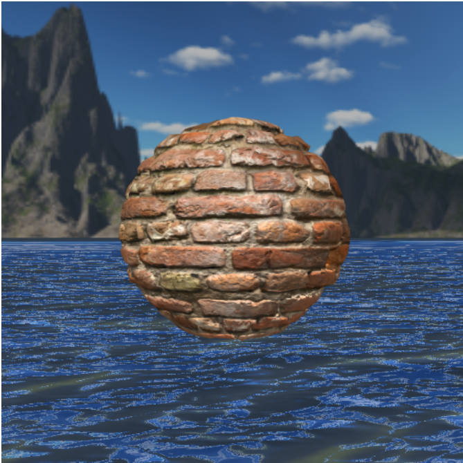

02561 - Computer Graphics - Project
Normal and Displacement Mapping
By Sumanth Varambally
Introduction
The objects that we draw using WebGL are rendered as polygons. Every object is rendered by subdividing triangles until the desired level of realism is achieved.
This results in a trade-off between a high number of polygons being used to capture detail, thereby increasing computations and resource utilisation
or a low number of polygons being used for higher performance, but losing detail. Most real life surfaces are not smooth, and have minor details that would
drastically increase the polygon count to capture.
Normal and displacement maps enable capturing detail without increasing polygon count. They do so by 'faking' lighting - they subtely change the way the objects are lit
in order to display more detail about the objects being rendered than that captured by the geometry. While normal maps encode details of normal directions, displacement maps
encode 'heights' - displacements of the vertex positions along the normal.
In this project, normal and displacement maps are explored to render a scene. The scene of a brick ball rendered using different techniques is compared to highlight the
visual differences offered by the different techniques.
Method
A normal map is usually described as a bitmap image. It encodes changes in the normal of the geometry, which affect lighting changes. To calculate the Lambertian (diffuse)
lighting of a surface, the unit vector from the shading point to the light source is dotted with the unit vector normal to that surface, and the result is the intensity of the
light on that surface. Imagine a polygonal model of a sphere - you can only approximate the shape of the surface. By using a 3-channel bitmap textured across the model, more
detailed normal vector information can be encoded. Each channel in the bitmap corresponds to a spatial dimension (X, Y and Z). This adds much more detail to the surface of a model,
especially in conjunction with advanced lighting techniques.
However, the normals in a normal map are specified in a co-ordinate space in which the z-axis points outwards. When applied to an object that is not oriented parallel to the xy plane
the lighting looks off. This can be corrected by rotating the normal in the normal map into a co-ordinate space in which the triangle normal is the z-axis. This rotation can be performed
as a quaternion rotation. (Frisvad, 2012) The formulation is represented as:
A displacement map is an image which describes the displacement of the object geometry along the direction of the normal. The pixel values store the height by which the vertex
normal is displaced along the direction of the normal. Given the pixel value normalized to lie in [0, 1], the equation for displacing the vertex position is given by:
Here, the normal and the pixel value are vectors and * represents element-wise multiplication, with the R, G and B values of the pixel value representing the displacement along X, Y
and Z axes respectively. "Displacement Scale" and "Displacement Bias" are two parameters that affect the way the displacement is rendered. Their effects can be explored in the project.
Implementation
The scene consists of a cubemap, as described in Worksheet 7. Phong shading has been implemented.
However, the water from the scene is covered by a quad, with a normal map applied to it. The water is made 100% reflective, with the light reflecting off the transformed normal.
The rotation of the normal is implemented in the GLSL shader as follows:
vec3 rotate_to_normal(vec3 normal, vec3 v)
{
float a = 1.0/(1.0 + normal.z);
float b = -normal.x*normal.y*a;
return vec3(1.0 - normal.x*normal.x*a, b, -normal.x)*v.x + vec3(b, 1.0 - normal.y*normal.y*a, -normal.y)*v.y + normal*v.z;
}
The scene can be navigated using a 'trackball', with movement restricted only around the X-axis.
The normal map used is shown below and the scene described can be seen here

Next, a sphere is rendered in the middle of the scene, with a brick texture applied to it. The texture is obtained from TextureHaven (Link) .
No normal mapping is applied. The scene can be seen here
Now, a normal map is applied to the sphere. It is loaded as a seperate texture and applied in the fragment shader. A uniform is used to determine which material is being rendered, and for the brick ball,
the normal is modified by the texture colour specified in the normal map. This is done by first calculating the texture co-ordinates for the normal map and rotating the normal at that point to the direction
specified in the normal map. The texture colour is obtained from the brick image as before, however the normal is updated, which is further used in lighting calculations.
vec2 t;
t.x = 1.0 - atan(v_Normal.z, v_Normal.x)/(2.0*M_PI);
t.y = acos(v_Normal.y)/M_PI;
vec4 norm_color = 2.0*texture2D(normalMap, t)-1.0;
new_normal = normalize(rotate_to_normal(v_Normal.xyz, normalize(norm_color.xyz)));
texColor = texture2D(sphereTex, t);
texColor.w = 1.0;
The scene can be seen here
Next, displacement mapping is implemented on top of normal mapping. This is done in the vertex shader by augmenting the vertex positions by the displacement, which is calculated as described before.
The pixel value of the correct position is sampled from the displacement map and used in the equation previously described.
vec2 t;
t.x = 1.0 - atan(normal.z, normal.x)/(2.0*M_PI);
t.y = acos(normal.y)/M_PI;
vec4 norm = 2.0*texture2D(displacementMap, t)- 1.0;
displacement = normal * (norm * displacement_scale + displacement_bias);
displacement.w = 0.0;
The final position of the vertex (and normal) is then set as:
gl_Position = persp_mat * view_mat * model_mat * (v_Position+displacement);
The scene can be seen here. The final scene also uses a texture for the water, along with a displacement map. The colour is a weighted average
of the reflection result and the colour of the texture. There are sliders to adjust the Displacement Scale and Displacement Bias.
Results
The scene with just the water quad looks as follows:
The scene with the sphere and plain texture mapping is as follows:
The scene with the sphere and normal mapping is as follows:

The scene with the sphere and normal and displacement mapping applied to the brick texture and water looks as follows:

The scenes can be found here:
1. Water Scene
2. Plain Texture Mapping
3. Normal Mapping
4. Displacement Mapping
Discussion
As evidenced by the images, normal and displacement mappping increase the realism of the objects in the scene substantially without affecting the polygon count.
While normal mapping influences the lighting of the object to increase detail, displacement mapping produces visible bumps on the surface of the sphere. This can be noticed by observing
the surface of the sphere along the 'edges'. Displacement Mapping causes distinct changes in the shape of the sphere.
The Displacement Scale and Displacement Bias parameters affect the geometry of the object substantially. The Displacement Scale is used to increase or decrease the effect caused by displacement mapping
Increasing it would make the effects more obvious, but it would also cause distortions to the geometry. The Displacement Bias parameter can be used to correct this effect.
While a very simple and primitive form of displacement mapping has been implemented here, more advanced techniques like Parallax Mapping are popular in modern games.